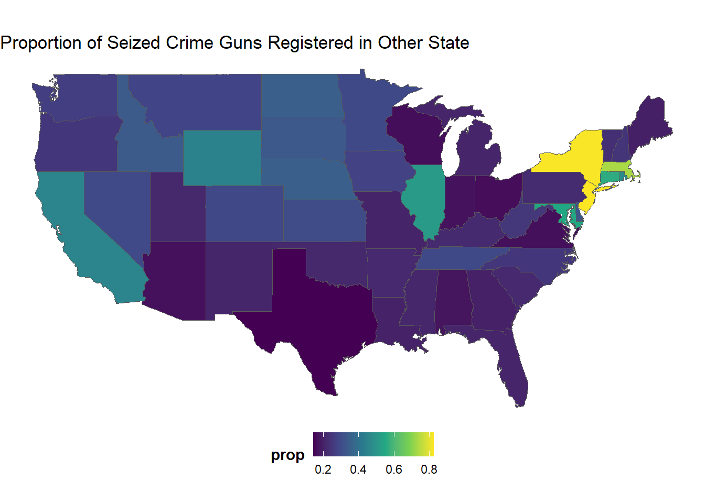
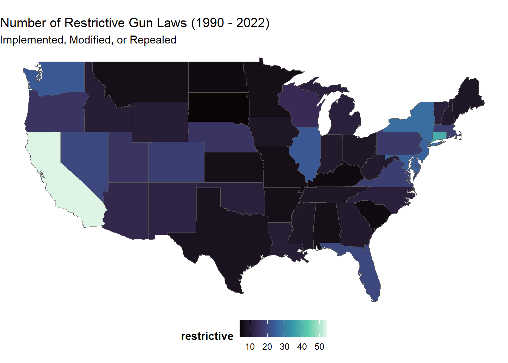
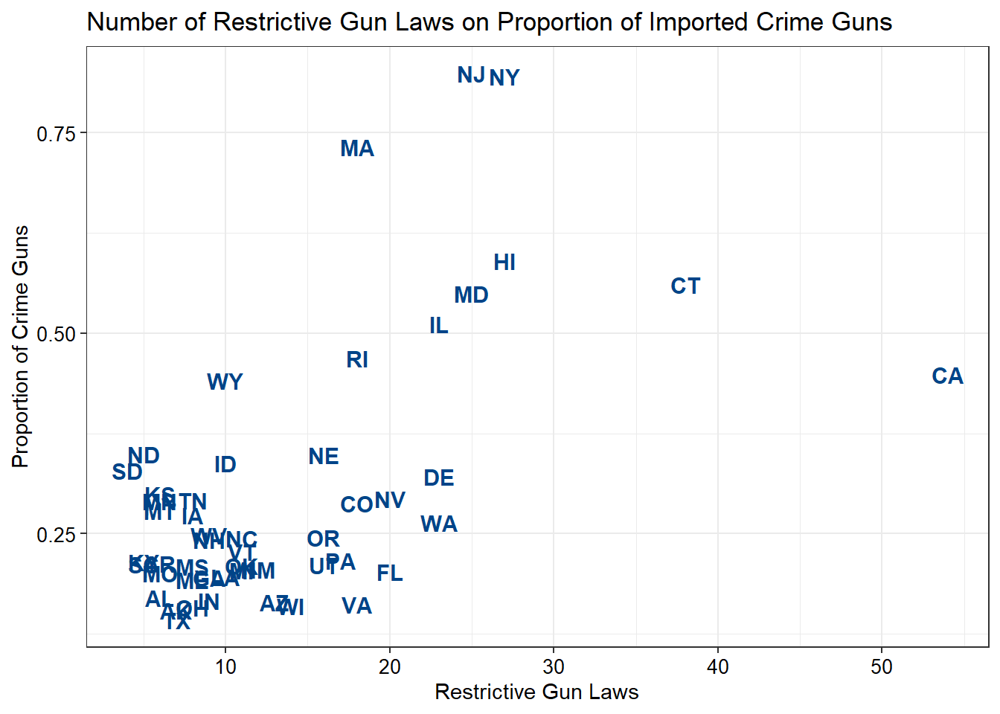
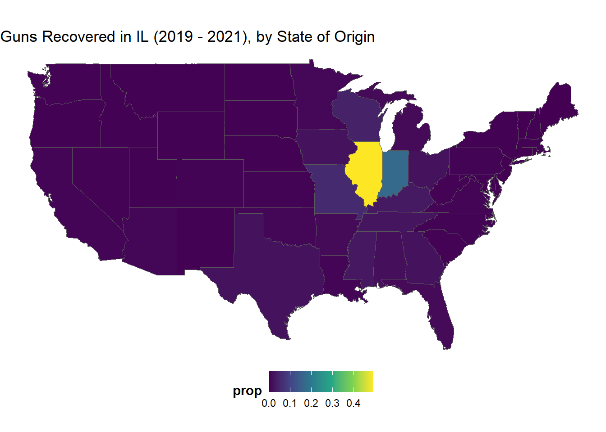
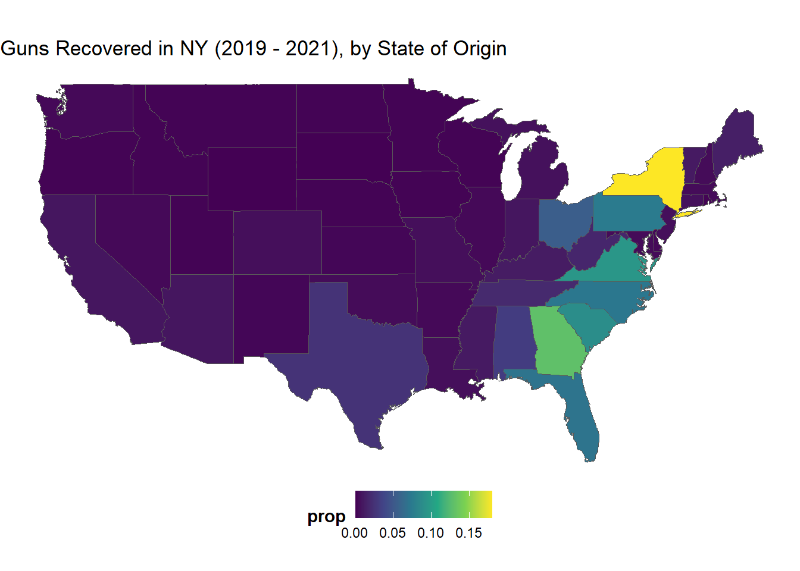
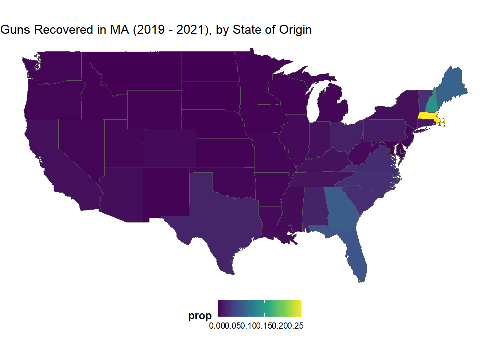

For this post I rely on some data posted by David Johnson. He kindly made ATF gun trace data freely available here, which I learned about via a post on Twitter:
Going to have a new paper out soon that uses ATF gun trace data. Data is state level (2010-21) and has info on exported and imported crime guns … for example, exported crime guns are, from the context of FL, guns from FL but recovered in GA. Imported crime guns are guns from GA but recovered in FL.
The ATF data details the source of guns seized by the agency that were involved in crimes. This includes the state that the gun was originally registered in, the state that the gun was seized in, and the number of days from the date of registration to the gun’s involvement in a crime (a statistic referred to as “time to crime”). With this data we can examine flows of crime guns from their registered states to where they were eventually used in a crime.
To do this, I take the raw ATF files from the osf repository and process them in a little bit of code (see below). This code loops through the files from 2019 to 2021, strips off some unnecessary values, and then stacks them in a single data frame. We also do some basic computations to get the number and proportion of crime guns in a given state that were originally registered in another state.
Code
# paramsyears <-c(2019,2020,2021)state_recovery_list <-list()# function to pull data from specific yearpull_data <-function(year){ recoveries <-read_csv(sprintf(".\gun_recovery_%s.csv", year) ) %>%fill(REGISTERED_STATE) %>%filter(TIME_RANGE !='Average Time-to-Crime in Years') %>%mutate(across(everything(), ~str_replace(., ",", "")))return(recoveries)}idx =0for(year in years) { idx = idx+1# add state recoveries state_recovery_list[[idx]] <-pull_data(year) %>%select(-TOTAL) %>%pivot_longer(c(-REGISTERED_STATE, -TIME_RANGE)) %>%mutate(value =as.numeric(value),reg_state =tolower(REGISTERED_STATE),recov_state =tolower(name),year = year ) %>%group_by(year, reg_state, recov_state) %>%summarise(guns =sum(value, na.rm = T))}# now combine# all recoveriesstate_recoveries <-do.call(rbind, state_recovery_list) %>%group_by(reg_state, recov_state) %>%summarise(guns =sum(guns))# recoveries from other states onlystate_recoveries_else <- state_recoveries %>%group_by(recov_state) %>%mutate(prop =1- guns/sum(guns)) %>%filter(reg_state == recov_state) %>%ungroup()
All of this code above gives us two long-form data frames that define the number of crime guns seized in each state, compared to the state that gun was registered in. As an example, we can print out some values below:
Crime Guns Recovered in Alabama
Recovery State
Registered State
Crime Guns
alabama
alabama
16371
alabama
alaska
1
alabama
arizona
59
alabama
arkansas
36
alabama
california
430
alabama
colorado
77
alabama
connecticut
59
alabama
delaware
22
alabama
district of columbia
85
alabama
florida
1290
For example, below we see that 16,371 guns were recovered in Alabama that were registered in Alabama, 1 gun that was registered in Alaska, and 59 that were registered in Arizona, and so on. We can also condense this table and find out the total proportion of crime guns that were registered in a state other than the state in which it was recovered:
Proportion of Crime Guns Recovered in Other State
State
Crime Guns
Proportion
alabama
16371
0.170
alaska
1776
0.154
arizona
21908
0.164
arkansas
5957
0.212
california
47192
0.448
colorado
10884
0.288
connecticut
1229
0.560
delaware
2325
0.321
district of columbia
196
0.958
florida
55685
0.203
Above we see that about 17% of crime guns seized in Alabama were registered outside the state, about 15% in Alaska, and for every other state. We can use this information to get a more comprehensive look at the sources and flows of guns.
Gun Control and Crime Guns
The first thing we can do is visually assess which states have the greatest proportion of seized crime guns registered in other states. Visually, the map below has some fairly striking patterns. New England states like Massachusetts, Connecticut, New York, and New Jersey all have very high proportions of crime guns imported from other states. In the Midwest we see Illinois is a bit of an outlier, wedged in between Wisconsin and Indiana. And out in the West we see California also has many crime guns imported from elsewhere.

Many states in New England, as well as Illinois and California, have a high proportion of crime guns registered in other states.
If we compare this map above to a map showing the number of restrictive gun laws passed (that is, any legislation that limits gun ownership, or repeals a previously permissive gun law) we see a fairly close overlap. California is noteworthy for having the largest raw number of restrictive gun legislation passed since 1990. States like Illinois, New York, Connecticut, New Jersey, and Massachusetts also have much higher numbers of restrictive laws passed.

States in the South, Southwest, and Northern New England pass fewer restrictive gun laws relative to other parts of the county.
So does increased gun control cause the importation of guns outside that state? Well, a very basic comparison of the number of restrictive gun laws on the proportion of imported crime guns does seem to support that:

In the bottom-left corner there are a lot of states with relatively permissive gun laws who also import very few crime guns from other states. On the upper-right quadrant we see states with much more restrictive gun laws who have a much higher proportion of guns imported from other states. To be clear, this isn’t a huge revelation to many. There are a lot of studies showing how crime guns are imported through gun traffickers, out-of-state dealers, and straw purchasers (Cook et al. 2014) which bypass the restrictive state laws.
With this data we can also look at some state-by-state patterns to observe where these flows of guns originate from. Logically, we would expect to see guns purchased in more permissive states to flow to less permissive ones. Below we have some examples from Illinois, New York, and Massachusetts.
Illinois
While I currently live in Connecticut, my home state of Illinois has had a long history with gun violence. Despite having more restrictive gun laws compared to much of the country, gun violence has been a serious and ongoing issue.
Indeed, it is not much of a secret that many guns used in crimes come from nearby states with less restrictive laws.Looking below we see that just under half of seized crime guns in Illinois are registered inside the state. Neighboring Indiana comprises about 17%, and then 5% and 4% from Missouri and Wisconsin, respectively.

The majority of crime guns not registered in Illinois come from neighboring Indiana.
Registered State
Crime Guns
Proportion
illinois
18332
0.488
indiana
6327
0.169
missouri
1961
0.052
wisconsin
1489
0.040
kentucky
1053
0.028
New York
In contrast to Illinois, many crime guns are imported from much farther away. The so called “iron pipeline” represents the interstate flow of guns from Southern states with relatively lax gun laws to the more restrictive states in New England (Braga et al. 2012). In the map below it is quite clear that most of the out of state guns used in crimes come from Georgia, Virginia, and South Carolina.

The ‘Iron Pipeline’ draws guns from South Atlantic states into New York.
Registered State
Crime Guns
Proportion
new york
2982
0.180
georgia
2133
0.129
virginia
1577
0.095
south carolina
1453
0.088
pennsylvania
1228
0.074
Massachusetts
Interestingly, while Massachusetts has similarly strict gun laws as New York, most of the crime guns actually flow from New Hampshire and Maine. While these states lie near the cluster of states with more restrictive laws, both New Hampshire and Maine are much more permissive with gun ownership. Here, their proximity is likely a larger factor in the proportion of imported guns relative to New York.

Crime guns in Massachusetts come primarily from nearyby Maine and New Hampshire, as well as from the deep South.
Registered State
Crime Guns
Proportion
massachusetts
1234
0.268
new hampshire
621
0.135
maine
394
0.085
georgia
359
0.078
florida
330
0.072
Gun Control in the US
I’ve done a lot of work on guns and gun violence in my academic career. To be clear, I believe gun ownership is a right that many owners take quite seriously (indeed, I am a gun owner as well). However, it’s also clear that the proliferation of guns in the United States is a serious public health problem (Bauchner et al. 2017). Laws restricting gun ownership in many cases makes sense - for example among perpetrators of intimate partner violence (Zeoli, Malinski, and Turchan 2016). What is less clear is how we make this work in a country with a patchwork of laws and a highly politicized environment around gun ownership. While I think gun legislation is a key part of reducing the burden that gun violence plays in the US, I also think a more “holistic” approach is also needed to address other parts of the problem - like access to mental health and addressing concentrated disadvantage in many places.
References
Bauchner, Howard, Frederick P Rivara, Robert O Bonow, Neil M Bressler, Mary L Nora Disis, Stephan Heckers, S Andrew Josephson, et al. 2017. “Death by Gun Violence—a Public Health Crisis.”JAMA Psychiatry 74 (12): 1195–96.
Braga, Anthony A, Garen J Wintemute, Glenn L Pierce, Philip J Cook, and Greg Ridgeway. 2012. “Interpreting the Empirical Evidence on Illegal Gun Market Dynamics.”Journal of Urban Health 89: 779–93.
Cook, Philip J, Richard J Harris, Jens Ludwig, and Harold A Pollack. 2014. “Some Sources of Crime Guns in Chicago: Dirty Dealers, Straw Purchasers, and Traffickers.”J. Crim. L. & Criminology 104: 717.
Zeoli, April M, Rebecca Malinski, and Brandon Turchan. 2016. “Risks and Targeted Interventions: Firearms in Intimate Partner Violence.”Epidemiologic Reviews 38 (1): 125–39.